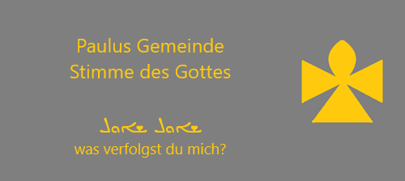
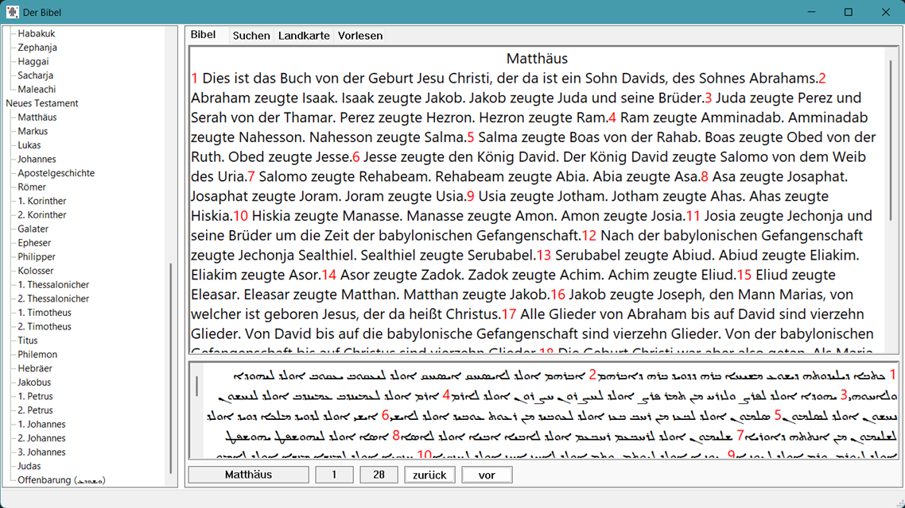
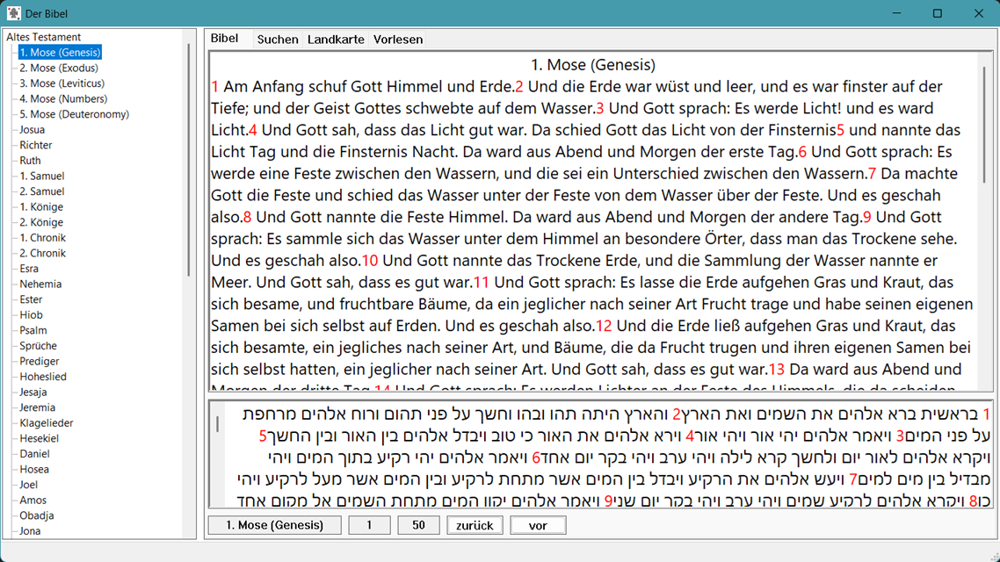
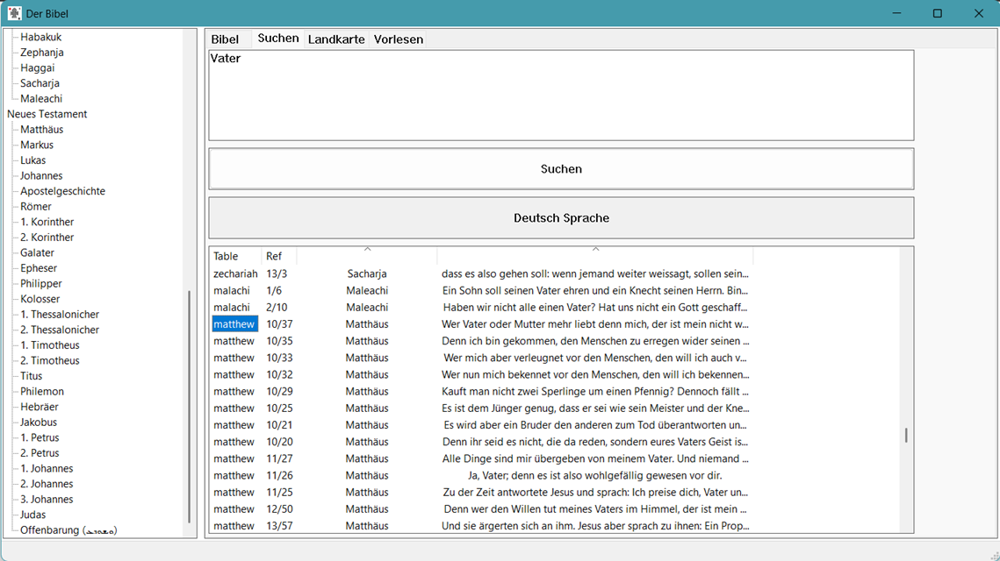
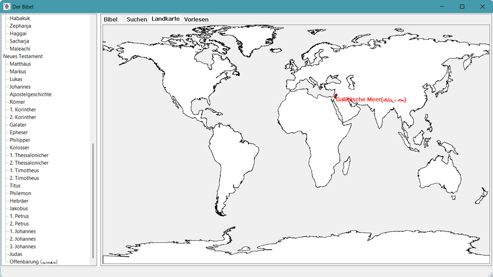
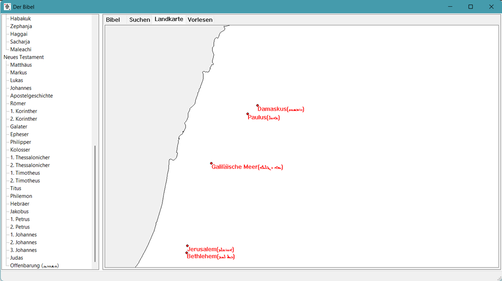
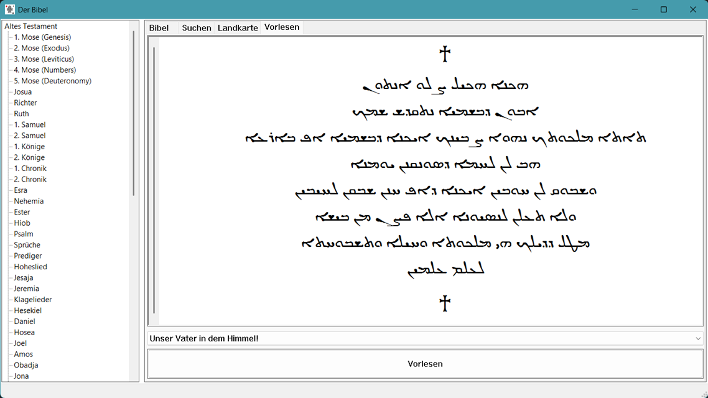
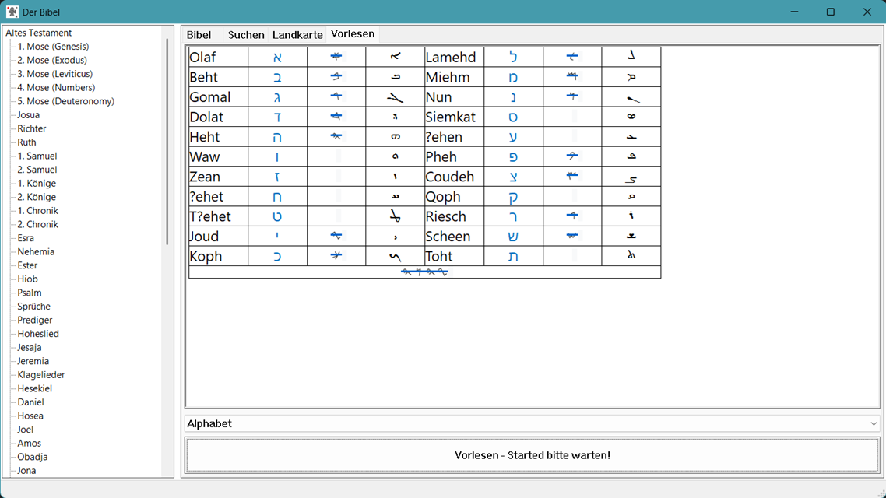
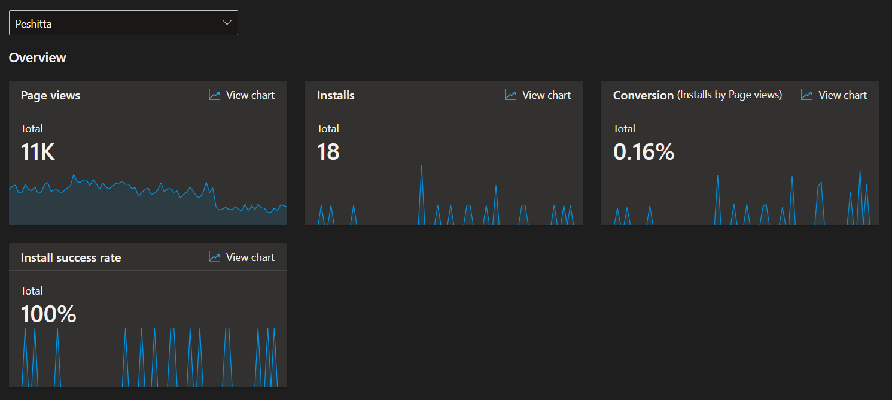

Peshitta
ܝܥܫܝܛܐ
Worüber
Der Bibel der Peschitta wurde auf Westaramäisch verfasst. Übersetzt aus dem Hebräischen, und enthält die Sprache, die Jesus tatsächlich im Umgang mit Menschen sprach.
Ihr ältesten Handschriften stammen aus dem 5. Jahrhundert.
Der dient als wichtige Referenz für das Westaramäische und insbesondere für die Sprache Jesu.
Die Anwendung
Die Anwendung zielt darauf ab, eine Verbindung und einen Bezug zwischen dem Westaramäischen und dem Deutschen herzustellen.
Referenzen: Altes Testament (Tanach) und Hebräische Bibel
Funktionen
Einfaches Lesen und Suchen; Aramäische Bibellesung; Vokabelanalyse; Kartenmaterial.
Herunterladen
Weitere Referenzen
Bilder








Statistik - Microsoft Reports - Drei Monaten
